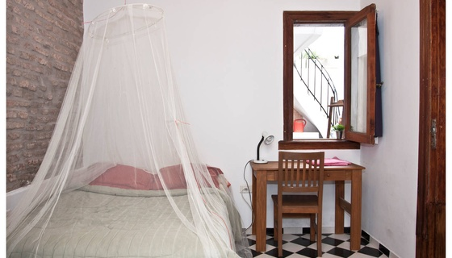

Bellefour offers an artist in residency program to art professionals, musicians, writers, and investigators who wish to work on a specific project in Buenos Aires, Argentina. The program is a continuation of the Eric James Johnson Memorial Fellowship, formerly run out of the Philadelphia Institute for Advanced Study in Philadelphia, Pennsylvania. Residencies do not have a fixed time limit, but we recommend between 4-6 weeks.
The residency program provides a living space, a studio, and a choice of either the use of a bicycle or an unlimited bus/subway pass. Additionally, we can provide assistance in finding sympathetic artists and musicians who may be open to collaboration. Transportation to Buenos Aires is the responsibility of fellowship recipients. The program is completely free and comprises no stipend; however, fellowship recipients are automatically considered for the Benjamin D. Letzler Genius Grant.
Residency application requirements are that the artist have a project in mind which they expect to bring to reasonable completion within the duration of their stay, and that their project have some tie to the city. At the end of the month, the artist is asked to present their work to the public, either in the house gallery of Bellefour, or in another form.
Bellefour's facilities include a small music studio, a low-power FM radio station, and a small silkscreening studio. Additionally, a studio within walking distance of the residency is available for residents' use; however, it is in a shared space and not suitable for high-volume projects or sculpture.
The focus of the Bellefour's Artist Residency program is the expansion of general human knowledge; it is thus Bellefour policy that access to residency projects or their documentation should be open and free, either through personal visits to the gallery, or through publication on Bellefour's website.
-
 Feel like Home 29 Feb 16Marion Balac and Carlos Carbonell create a personalized room based on their guests' social network profiles, in order for them to "feel like home".
Feel like Home 29 Feb 16Marion Balac and Carlos Carbonell create a personalized room based on their guests' social network profiles, in order for them to "feel like home". -
 Elisabeth Wood 06 Mar 15Elisabeth Wood presents - Writing/Meditation as Noise Intervention, a daily writing exercise.
Elisabeth Wood 06 Mar 15Elisabeth Wood presents - Writing/Meditation as Noise Intervention, a daily writing exercise. -
 Molly Nilsson - Sólo Paraíso 03 Feb 14Molly Nilsson's Sólo Paraíso, en EP with songs of summer recorded during her residency in Buenos Aires.
Molly Nilsson - Sólo Paraíso 03 Feb 14Molly Nilsson's Sólo Paraíso, en EP with songs of summer recorded during her residency in Buenos Aires. -
 Radio Yanqui Libre 09 Feb 10Radio Yanqui Libre is a low-power FM talk radio station broadcast for the months of February and March, 2010.
Radio Yanqui Libre 09 Feb 10Radio Yanqui Libre is a low-power FM talk radio station broadcast for the months of February and March, 2010. -
 Bobo Boutin - Sin Diversión 12 Jan 10Bobo Boutin, "el trapo mas famoso de Montreal", performs and presents drawings made over the course of his month-long residency at Bellefour.
Bobo Boutin - Sin Diversión 12 Jan 10Bobo Boutin, "el trapo mas famoso de Montreal", performs and presents drawings made over the course of his month-long residency at Bellefour.